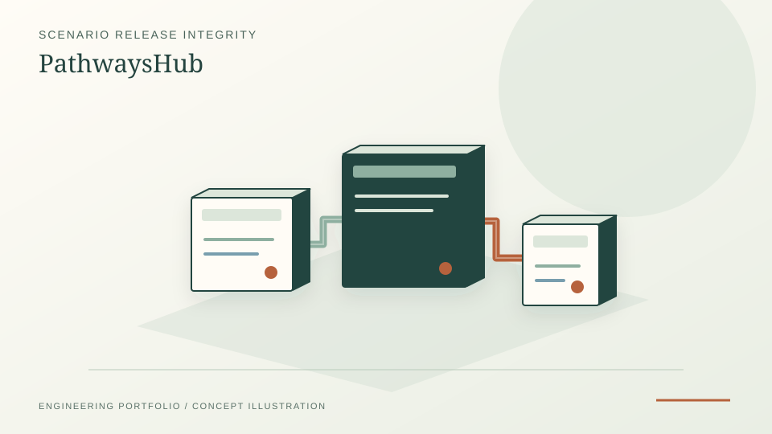

Synthetic three-submission intake demo with accepted and rejected cases.
Independent open-source research / October 2026
PathwaysHub — Auditable research operations
Research software prototype for validating IAMC-style scenario submissions, evidence-linked review records, and bounded release briefings, using synthetic fixtures and explicit integrity contracts.
PythonpytestJSONSHA-256

PROJECT REFERENCE / PATHWAYS-HUBFail-closed manifest/hash checks and review-ledger tests.
No human scientific approvals or real partner-coordination evidence.
Implemented source contract
The Python command-line intake verifies protocol and release identities, units, expected years and SHA-256 hashes. Corrupt inputs and unsupported I3 physical claims are rejected by design.
Demonstration evidence
Three synthetic submissions test acceptance, incompatible units and missing scenario years. A review-state ledger and status briefing are tested software components, not real scientific approvals.
Companion science project
PathwaysHub can consume versioned ResidualPathways outputs while preserving evidence scope. A reporting-coverage artifact cannot be promoted into gross emissions evidence by software.
Sources and reproducibility
Project source →
Read example commands and test limitations.
ResidualPathways source →
Companion scientific work.
Live companion atlas →
Source-linked reporting-coverage explorer.
What this does not establish
Research-operations prototype, not a live multi-institutional consortium. External participants, human approval, confidential-submission workflow and independent scientific review are not established.